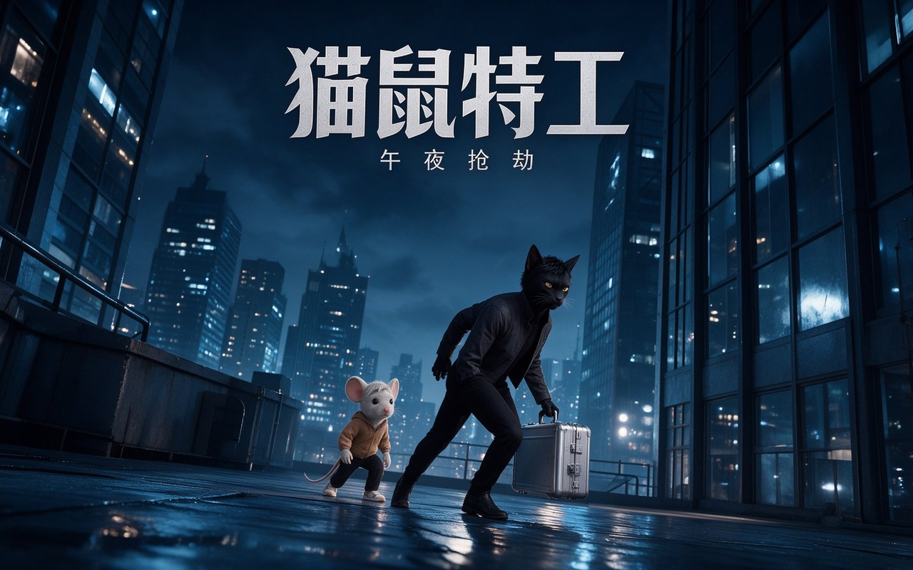

深夜，黑猫特工「墨」与老鼠「米粒」潜入戒备森严的大楼，夺走一只神秘银色金属箱。逃离追捕后他们发现——箱中没有财宝，只有一张失踪小猫的照片。而安全屋的墙上，贴满了其他失踪动物的照片……
短片用「类型片开场 + 反转」的叙事结构：前半段是标准劫案片氛围——深夜潜入、霓虹雨夜、紧张追逃；后半段揭示银色金属箱里没有财宝，只有一张失踪小猫的照片，安全屋墙面上贴满失踪动物照片，悬念从「偷了什么」切换为「这一切背后是谁」。
视觉上以午夜蓝黑为主基调，配合湿冷街面反光与建筑剪影，让「猫鼠搭档」的拟人角色在写实城市环境中成立；神秘黑影的出场保留在结尾，为续篇留口。
最终交付约 2 分钟完整叙事短片：15+ 个 AI 生成镜头完成「抢劫 → 反转 → 悬念」三段式故事，角色形象与午夜冷调视觉贯穿全片，验证了用 AI 工作流承载连续叙事动画的完整能力。
